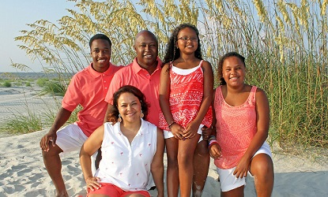

I was born here in Greenville South Carolina, in 2003. I have lived here my whole life in two different homes and one apartment. I went to Rudolph G. Gordon Elementary School and Dr. Phinnize J. Fisher Middle School. I was the first graduating class from Fisher Middle School. Fisher opened with 6th grade and added 7th and 8th grade as my class moved up, so I was never the youngest in middle school. My mom loves taking vacations, so over the years I have been to many different places. I’ve been to most of the east coast states; I have been to west coast states too, just not as many. I have been to places such as Florida, Hawaii, California, Texas, New York, New Jersey, etc. One of the earliest memories I have was when I was around six years old. My aunt was taking me to school, but didn’t know the directions so I told her to follow another car that had my school's logo on it, “follow the gator,” we ended up making it to my school.
In my family of 5, I’m the middle child. My older brother Kaleb is 19 and he goes to Greenville Technical College. My younger sister Ava is 11, she’s in 6th grade and goes to Fisher Middle School. My mom is a labor and delivery nurse; she works at Greenville Memorial Hospital. My dad is a financial accountant who works for Fluor. My older brother lives with his mom in Easley, but my mom, sister, dad, and I have lived in our current house for the past 11 years. My parents grew up military brats, moving all around the world, but my sister and I have always lived here in Greenville South Carolina.
When it comes to my interests, I have a lot. I am a very athletic person who enjoys pretty much any sport you put in front of me. Right now, I play soccer for CESA and have conditioning and practice for basketball. I also enjoy working and building with technology. I have an EV3 robot that I program and build just for fun. I also edit my own videos; I’ll take lots video on vacations and then edit them so that we can look back and remember our vacations. I make videos on about pretty much anything. The video to the right, is a video I made for my brother, showing some of his football highlights.
For my future I first see myself finishing high school. Then going to college to major in computer engineering. I would like to go to Clemson they have a very good engineering program, it's in the state, and both my parents went there so it would be cool to follow them. When I graduate college, my dream job is to work for Disney as a Disney animator. When it comes to family, I would like to be married and have between 2 to 4 kids. I want to be able to provide for my family, like my parents have done for me and my siblings, and to be able to take them on vacations so they can have different experiences throughout their childhood.